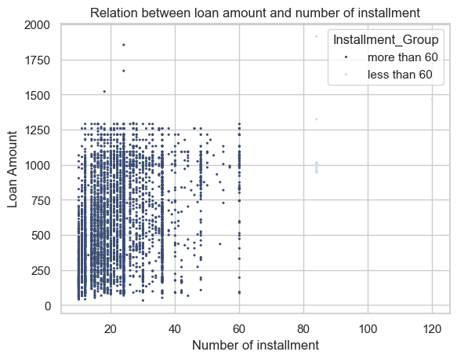
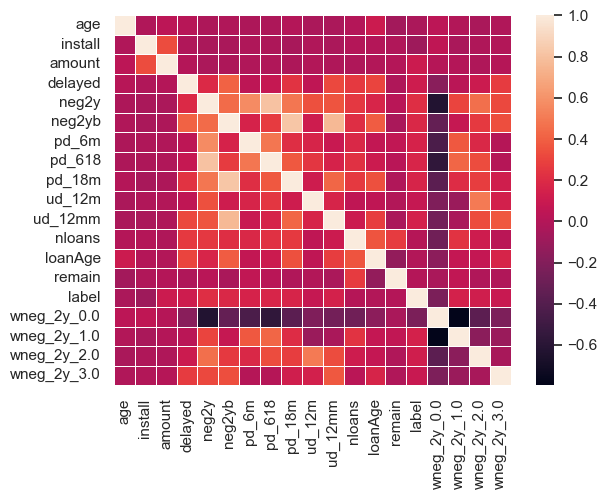
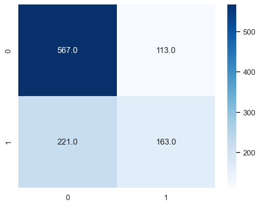
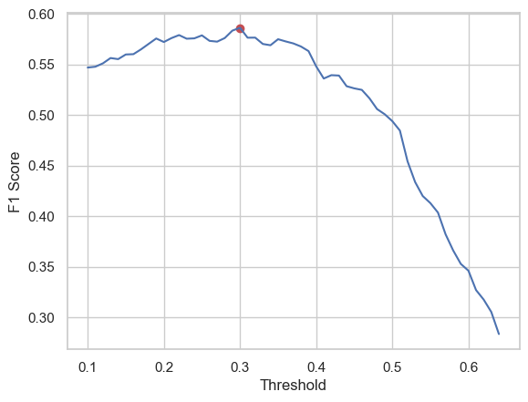
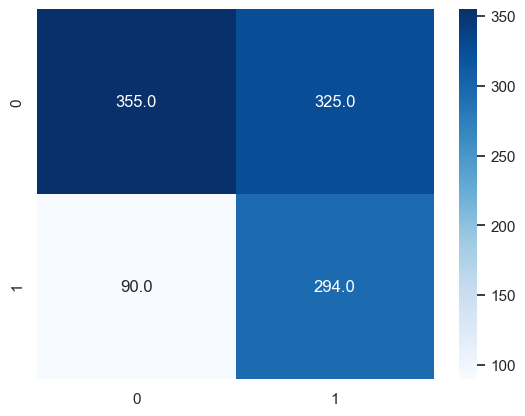

import pandas as pd
df = pd.read_csv("C:\\Users\\rtava\\OneDrive\\Documents\\Git\\MLProject\\loans_clean.csv")In this post, I will use Random Forest method to predict default rate.
Data
To answer the question, I will analyze loan data for 5000 banking system customers in a Middle Eastern country.
print("This dataset has", df.shape[0], "records with", df.shape[1], "atributes")
print("About", df.label.mean().round(2) , "of lables was defaulted with label 1") This dataset has 5578 records with 16 atributes
About 0.38 of lables was defaulted with label 1Varibales
The following table provide a description for variables in the data set.
| Variable name | Description |
|---|---|
| age | Age of borrower |
| install | Number of requested loan’s installment |
| amount | Number of requested loan |
| delayed | total delyaed that the borrower had |
| neg2y | Number of negative status in recent two years |
| neg2yb | Number of negative status before recent two years |
| pd_6m | Number of past due payment in recent 6 months |
| pd_618 | Number of past due payment in recent 6-18 months |
| pd_18m | Number of past due payment before recent 18 months |
| ud_12m | Number of unpaid payment in recent 12 months |
| ud_12mm | Number of unpaid payment before recent 12 months |
| nloans | Number of terminated loan the person have had |
| loanAge | The lodest loan age |
| remain | Outstanding debt to total debt (ratio) |
| wneg_2y | Worst negative status in recent two years |
| label | is =1 if the costumer paid at least one installment with more than 90 days delay |
Descriptive Statistics
import seaborn as sns
import matplotlib.pyplot as plt
sns.set_theme(style="whitegrid")
df.loc[df['install']>61, 'Installment_Group']="less than 60"
df.Installment_Group.fillna("more than 60", inplace=True)
plot = sns.scatterplot(x="install", y="amount",
s=5, palette="ch:r=-.2,d=.3_r",
sizes=(1, 8), linewidth=0, hue="Installment_Group",
data=df);
plot.set_xlabel("Number of installment")
plot.set_ylabel("Loan Amount")
plot.set_title("Relation between loan amount and number of installment")
plt.show();
Dealing with outliers
The following lines remove outliers using interquartile range method:
import warnings
warnings.filterwarnings('ignore')
df.drop(columns='Installment_Group', inplace=True)
df_new = df
for c in df_new.columns:
q1 = df_new[c].quantile(0.05)
q3 = df_new[c].quantile(0.95)
iqr = q3-q1
lower_fence = q1 - 1.5*iqr
upper_fence = q3 + 1.5*iqr
for i in range(len(df)):
if df_new.loc[i, c] < lower_fence or df_new.loc[i, c] > upper_fence: # if outlier
df_new.loc[i, "out_" + c] = 1
else:
df_new.loc[i, "out_" + c] = 0
out_col = [col for col in df_new.columns if 'out_' in col]
df_new['out'] = df_new[out_col].sum(axis=1)
df_new = df_new.loc[df_new.out==0]
df_new.drop([col for col in df_new.columns if 'out_' in col], axis=1, inplace=True)
df_new.drop(columns=['out'], inplace=True)I change the categorical dummies to usual dummies:
df_prep = pd.get_dummies(df_new, columns=['wneg_2y'])
for column in ['wneg_2y_0.0',
'wneg_2y_1.0',
'wneg_2y_2.0',
'wneg_2y_3.0']:
df_prep[column] = df_prep[column].replace({True: 1, False: 0})Correlation between variabels:
corr = df_prep.corr(method = 'pearson')
corr
sns.heatmap(corr,annot=False,fmt=".1f", linewidth=.5)<Axes: >
Based on the heat map correlation, I will remove “wneg” variables.
x_col = ['age', 'install', 'amount', 'delayed', 'neg2y', 'neg2yb', 'pd_6m',
'pd_618', 'pd_18m', 'ud_12m', 'ud_12mm', 'nloans', 'loanAge',
'remain']Implementing the RF model
from sklearn.model_selection import train_test_split
df_train, df_test = train_test_split(df_prep, test_size=0.2, random_state = 1234)
X_train, y_train = df_train[x_col], df_train['label']
X_test, y_test = df_test[x_col], df_test['label']
print("Train Sample Size:", X_train.shape[0],
"\nTest Sample Size:", X_test.shape[0])Train Sample Size: 4252
Test Sample Size: 1064from sklearn import metrics
from sklearn.ensemble import RandomForestClassifier
threshold = 0.5
RF_model = RandomForestClassifier(random_state=1234, max_depth = 20, n_estimators=100, class_weight='balanced')
RF_model.fit(X_train,y_train)
y_prob_RF = RF_model.predict_proba(X_test)
y_pred_RF = (y_prob_RF[:,1] >= threshold).astype('int')Model Evaluation
Accuracy_RF = metrics.accuracy_score(y_test, y_pred_RF)
F1_RF = metrics.f1_score(y_test, y_pred_RF)
AUC = metrics.roc_auc_score(y_test, y_pred_RF)
clas_report = metrics.classification_report(y_test, y_pred_RF)
print("RF Accuracy:",Accuracy_RF, "\nF1 Score:", F1_RF, "\nAUC_ROC:", AUC)RF Accuracy: 0.6860902255639098
F1 Score: 0.4939393939393939
AUC_ROC: 0.6291513480392158Confusion Matrix
from sklearn.metrics import confusion_matrix, ConfusionMatrixDisplay
cf_matrix = confusion_matrix(y_test, y_pred_RF)
sns.heatmap(cf_matrix, annot=True, cmap='Blues', fmt='0.1f')<Axes: >
Optimal Threshold
from sklearn import metrics
from sklearn.ensemble import RandomForestClassifier
Fscore = []
thrsh = []
for i in range(10,65,1):
threshold = i/100
thrsh.append(threshold)
RF_model = RandomForestClassifier(random_state=1234, max_depth = 20, n_estimators=100, class_weight='balanced')
RF_model.fit(X_train,y_train)
y_prob_RF = RF_model.predict_proba(X_test)
y_pred_RF = (y_prob_RF[:,1] >= threshold).astype('int')
Accuracy_RF = metrics.accuracy_score(y_test, y_pred_RF)
Fscore.append(metrics.f1_score(y_test, y_pred_RF))plot = sns.lineplot(x=thrsh, y=Fscore)
plt.scatter(x=0.3, y=0.586, color='r')
plot.set_xlabel("Threshold")
plot.set_ylabel("F1 Score");
We can see that the optimal threshold is 0.3, then we have:
threshold = 0.3
y_pred_RF = (y_prob_RF[:,1] >= threshold).astype('int')
Accuracy_RF = metrics.accuracy_score(y_test, y_pred_RF)
F1_RF = metrics.f1_score(y_test, y_pred_RF)
AUC = metrics.roc_auc_score(y_test, y_pred_RF)
clas_report = metrics.classification_report(y_test, y_pred_RF)
print("RF Accuracy:",Accuracy_RF, "\nF1 Score:", F1_RF, "\nAUC_ROC:", AUC)
cf_matrix = confusion_matrix(y_test, y_pred_RF)
sns.heatmap(cf_matrix, annot=True, cmap='Blues', fmt='0.1f')RF Accuracy: 0.6099624060150376
F1 Score: 0.5862412761714855
AUC_ROC: 0.6438419117647058<Axes: >